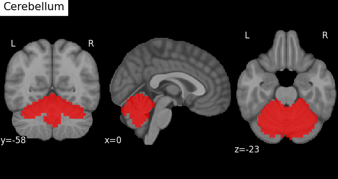
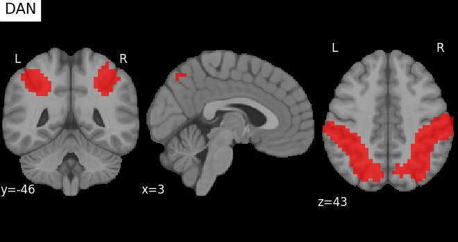
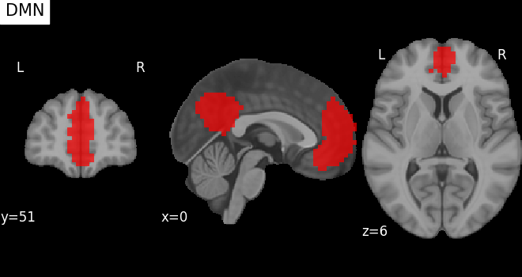
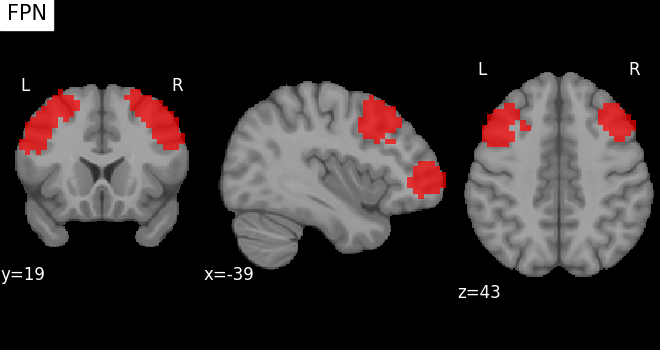
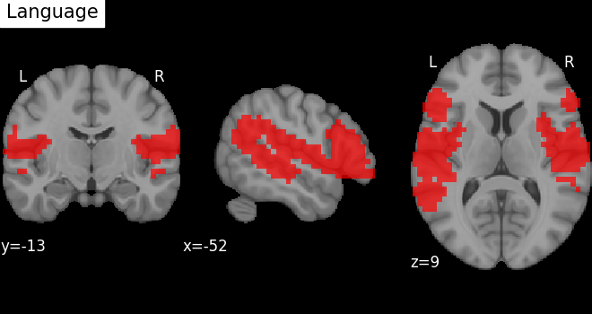
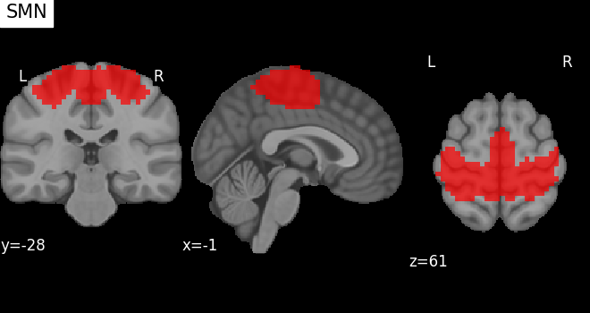
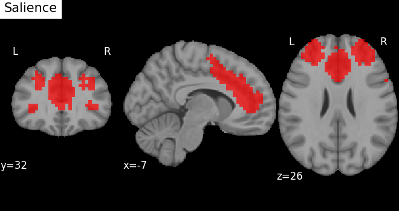
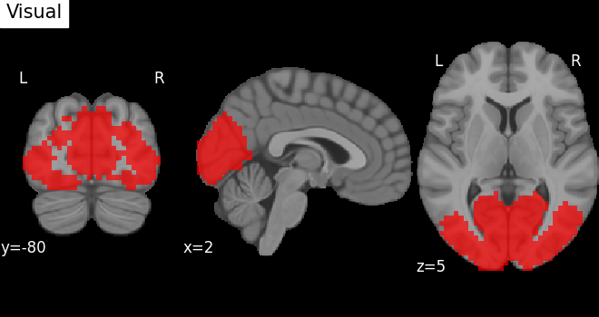

← Home
MSDL Atlas Network ROI Report
This report summarizes the 8 large-scale brain networks extracted from the MSDL Atlas via nilearn.datasets.fetch_atlas_msdl(). Each network is defined by combining multiple MSDL components (by label keywords). ROI masks were averaged and binarized for use in SBC.
Cerebellum
MSDL components used:

DAN
MSDL components used:
- L IPS
- R IPS
- L Ant IPS
- R Ant IPS

DMN
MSDL components used:
- L DMN
- Med DMN
- Front DMN
- R DMN

FPN
MSDL components used:
- L DLPFC
- R DLPFC
- L Front pol
- R Front pol

Language
MSDL components used:
- Broca
- L STS
- R STS
- L TPJ
- R TPJ

SMN
MSDL components used:

Salience
MSDL components used:
- D ACC
- R A Ins
- L Ins
- R Ins
- Cing

Visual
MSDL components used:
- Striate
- Vis
- L LOC
- R LOC
- Occ post

Note: All ROIs are in MNI space. Thresholding at 50% overlap was applied before binarization. These masks are now ready for use in seed-based connectivity analyses.